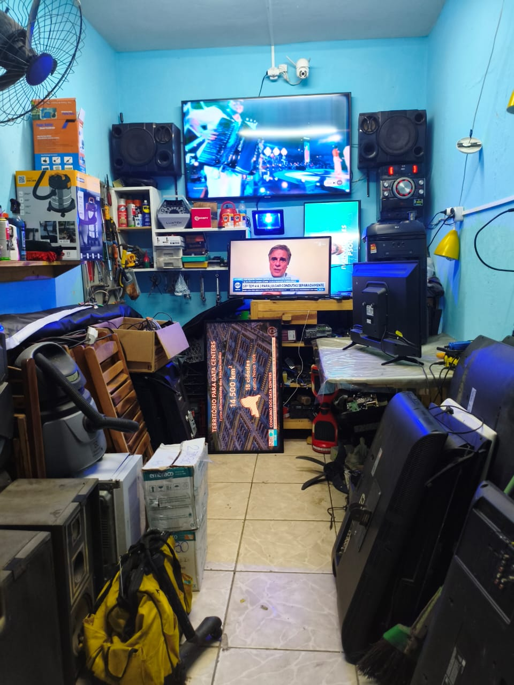

Eletrônica residencial e embarcada com padrão de laboratório.
Reparo e manutenção de aparelhos domésticos e sistemas eletrônicos de ônibus, com diagnóstico técnico, atendimento em domicílio e suporte para garagens de frotas.

Duas frentes. Um mesmo padrão.
Atendimento para residências, empresas e garagens de ônibus, com processo técnico organizado e comunicação clara.
Linha doméstica
TVs, monitores, micro-ondas, air fryer, soundbar, caixas amplificadas, fontes e placas.
Ônibus e frotas
Monitores de bordo, letreiros LED, módulo de som, rádio do motorista, USB e câmeras.
Diagnóstico e orçamento
Você descreve o problema, envia os dados e recebe orientação para o próximo passo.
Eletrônica embarcada que ajuda a manter a frota rodando.
Atendimento em garagem, bancada móvel quando aplicável, reparo de módulos e periféricos e documentação técnica para facilitar a decisão da gestão.
Do diagnóstico ao teste, sem pular etapas.
Diagnóstico
Entendimento do sintoma e avaliação técnica antes do reparo.
Laudo e orçamento
Condições, peças e serviço são apresentados para aprovação.
Reparo e teste
Após aprovação, o equipamento é reparado e testado.
Porque uma falha eletrônica precisa ser entendida antes de simplesmente trocar componentes. A proposta é diagnosticar, explicar e registrar o que foi feito.
Conheça o profissional →Atendimento na garagem
Quando o serviço permitir, a avaliação pode ser realizada no local da frota.
Laudo técnico
Registro do diagnóstico e orientação sobre reparo ou manutenção.
Peças e componentes
Aplicação conforme disponibilidade e especificação do equipamento.
Atendimento transparente
Orçamento e condições combinados antes da execução.